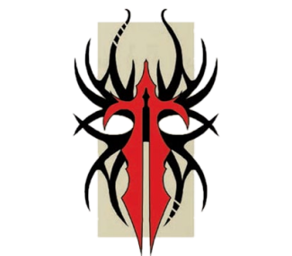

“早在你诞生之前，我便已踏上追寻完美之道；在你湮灭之后，这条道路仍将延续不止。唯一的问题是，你的死亡，能否成为通往完美杀伐之道的又一级阶梯？”
——安雅拉，枯刃斗教魅魔
矗立于裂爪阴谋团阴影之下的，是枯刃斗教及其魅魔安雅拉。这个巫灵斗教构成了奴隶贸易的中坚力量，自她们在枢纽定居初期与萨莱恩和扎尔加恩结盟以来，便一路崛起、繁荣兴盛。尽管其人数与影响力不及裂爪阴谋团，但枯刃斗教对城市运转同样至关重要——正是“影脊竞技坑”中的角斗表演，以及她们所豢养的猛兽与奴隶，吸引了大量贸易，维系着枢纽的生存，也满足了枢纽中黑暗灵族居民邪恶的欲求。与扎尔加恩及其阴谋团不同，枯刃斗教并不过分关注竞技场高墙之外发生的事情。她们只对商人、以及获取和训练用于格斗的奴隶感兴趣。这其中的一部分原因，在于她们要提供黑暗灵族赖以生存的施虐式娱乐。而扩区的其他居民也出于病态的好奇心被此吸引。安雅拉对导致扎尔加恩与萨莱恩反目的权力游戏并无真正的兴趣（尽管当时她确实发现自己被卷入了两位执政官之间的纷争），如今扎尔加恩幽居金字塔，而裂爪阴谋团也不对她的内务横加干涉，对此她十分满意。
真正令枯刃斗教感兴趣的，是斗教在影脊竞技坑中举办的血腥角斗，以及为这些赛事寻觅合适的奴隶与猛兽。如果探险者能提供此类战斗用生物，斗教非常乐意与他们交易；并且如果探险者与斗教达成交易，还会受邀亲眼见证他们的“货品”在角斗中的表现。然而，安雅拉通常对帮助萨莱恩回归，或废黜扎尔加恩的野心持冷淡态度，这只是因为那会打破现状。与许多黑暗灵族领袖一样，安雅拉更倾向于静观其变，待到看清谁将接近胜利，再将筹码押在希望掌控枢纽的一方身上；只要她的奴隶贸易和珍贵的角斗赛事不受干扰，她就不会亲自下场。